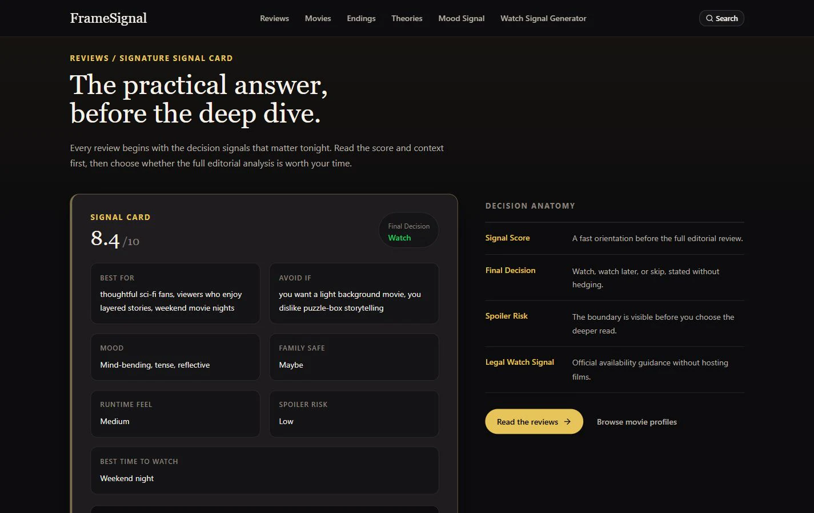
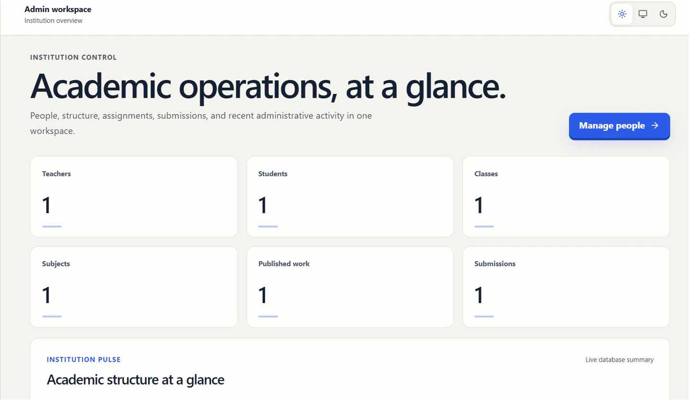
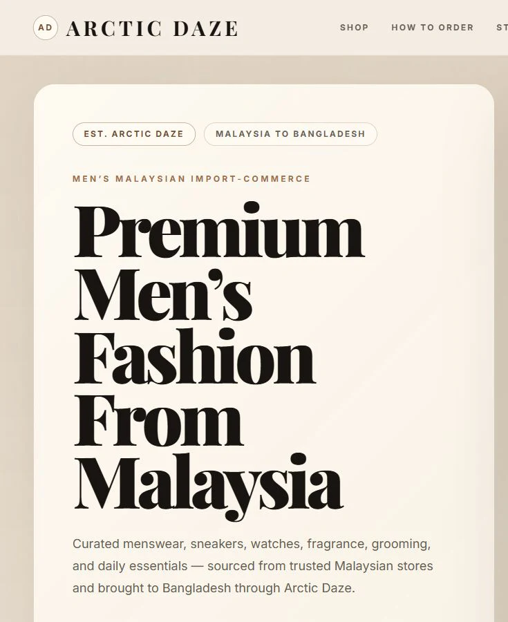

01 / Full-stack product
FrameSignal
Movie recommendations and analysis, with a clear line between spoiler-free advice and deeper discussion.
View source ↗
Portfolio / Dhaka, Bangladesh
Software engineer
I work on web applications, backend systems and machine learning. This is a selection of my projects and research.
Movie recommendations and analysis, with a clear line between spoiler-free advice and deeper discussion.
View source ↗
An assignment and submission system for administrators, teachers and students.
View source ↗
Explanatory architecture · not a live system
A comparison of URL and HTML features for detecting phishing websites.
View research ↗Official test · 168,060 rows
Frozen estimators; benign calendar date overlaps train/test. Offline research, not a deployed scanner. Source table.
A study of pixel-level wall crack segmentation and how prediction thresholds affect model performance.
View research ↗Phase 8 · crack-only validation IoU
1,695 validation images, including 1,477 crack-present images. Not independent field certification. Source policy.
A fashion and lifestyle browsing experience for customers in Bangladesh.
View source ↗
Experiments in classification, segmentation and model evaluation.
Uncertainty, crack topology and selective prediction. Formal validation is still pending.
A comparison of models for binary image classification.
Supervised and self-supervised approaches to classifying rice varieties.
A dimensional retail data model and Power BI reports built from Online Retail II data.